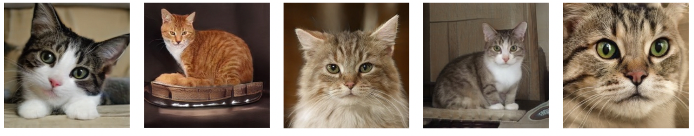
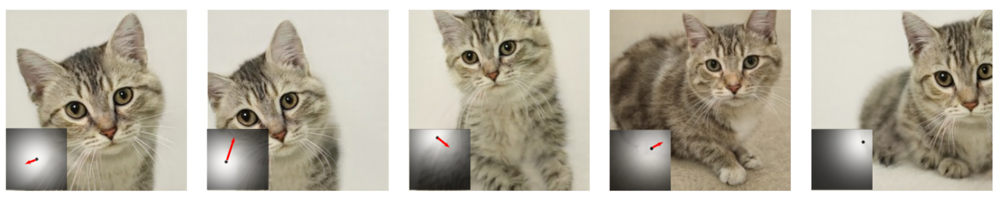
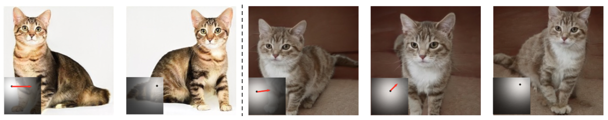
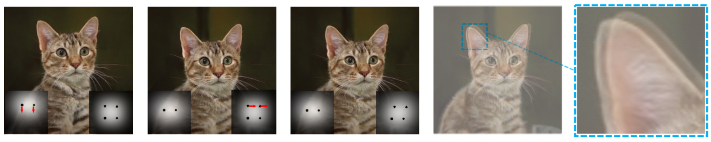

Improving GAN Equilibrium
by Raising Spatial Awareness
by Raising Spatial Awareness
1 The Chinese University of Hong Kong,
2 The Australian National University
2 The Australian National University
|  |
|  |
|  |
|  |
@article{wang2021eqgan,
title = {Improving GAN Equilibrium by Raising Spatial Awareness},
author = {Wang, Jianyuan and Yang, Ceyuan and Xu, Yinghao and Shen, Yujun and Li, Hongdong and Zhou, Bolei},
article = {arXiv preprint arXiv: 2112.00718},
year = {2021}
}